Shapley value examples
Catarina P. Loureiro
Source:vignettes/Shapley_examples.Rmd
Shapley_examples.RmdThis vignette reproduces the examples presented in Loureiro et al. (2026). It provides examples of how
to compute Shapley values for interval-valued data and visualize the
results. The datasets included here are the Cars and Spotify
Tracks datasets, which are discussed in Sections 5.1 and 5.2 of
the paper, respectively. The datasets are available in the package and
can be loaded using data("intCars") and
data("spotify_tracks").
The intData class is used to create objects that
represent interval-valued data. The int_Shapley function
computes the Shapley value for each observation, based on the robust
squared Interval-Mahalanobis distances. The
int_Shapley_interaction function computes the Shapley
interaction values for pairs of variables. The
int_Shapley_decomp function decomposes the Shapley values
into centers, ranges, and their interactions’ contributions. The
functions barplot_int_Shapley,
beeswarm_int_Shapley, tileplot_int_Shapley,
and radarplot_int_Shapley are used to visualize the Shapley
values in different ways. The functions
plot_int_Shapley_inter and
barplot_int_Shapley_decomp are used to visualize the
Shapley interaction values and the decomposition of the Shapley values,
respectively. The examples provided here demonstrate how to apply these
methods to real datasets, and the results can be compared to those
presented in the paper for validation.
For more details and examples on the intData class,
please see the vignette: Class
intData examples.
For extra insight into the IMCD estimator and outlier
detection methods’ application on the same two datasets, please see the
vignette: IMCD estimator
examples.
Cars Dataset
This dataset contains interval data of car specifications (Duarte Silva and Brito (2025)), including min-max values. The aggregation of the microdata was done by car model, resulting in observations. It is composed of variables:
- Engine Capacity (EngCap)
- Top Speed
- Acceleration
- Price (lnPrice after log transformation)
- Class (values: Berlina, Luxury, Sportive, and Utilitarian)
As no microdata are available, and following the standard assumption
in the literature, we adopt a continuous uniform distribution for the
latent variables, corresponding to the symmetric and i.d. case with
.
This is the default setting for the intData class.
data(intCars)
cars_microdata <- intCars$microdata
cars_int <- intCars$intDataThe IMCD function is used to compute the reweighted IMCD
estimates and the robust squared Interval-Mahalanobis distances of each
observation from the estimated barycenter. The int_outliers
function identifies potential outliers based on the robust distances
obtained from the IMCD estimates.
cars_IMCD <- IMCD(cars_int, m=floor(0.75*cars_int@NObs), cutoff = "farness", cutoff_lvl = 0.9)
cars_outliers <- int_outliers(cars_IMCD$robust_dist, p = cars_int@NIVar,
cutoff = "farness", cutoff_lvl = 0.9)
cars_outliers$outliers_names
#> [1] "Ferrari" "HondaNSK" "MercedesSL" "MercedesClasseS"
#> [5] "Porsche"Plot of the robust squared Interval-Mahalanobis distances, ordered from largest to smallest. The shape represents the car model class, with the horizontal line corresponding to the farness cutoff value, and the outliers being marked in blue.
cars_is_outliers <- as.character(cars_outliers$is_outlier)
cars_is_outliers[cars_outliers$is_outlier] <- "Outlier"
cars_is_outliers[!cars_outliers$is_outlier] <- "Inlier"
plot_interval_dist(
dist = cars_IMCD$robust_dist,
cutoff = cars_outliers$cutoff_value,
cutoff_label = "0.9 Farness",
obs_names = rownames(cars_int),
color_class = cars_is_outliers,
palette =c("gray50","dodgerblue"),
shape_class = cars_microdata$class,
shape_label = "Class",
sort.obs = TRUE
)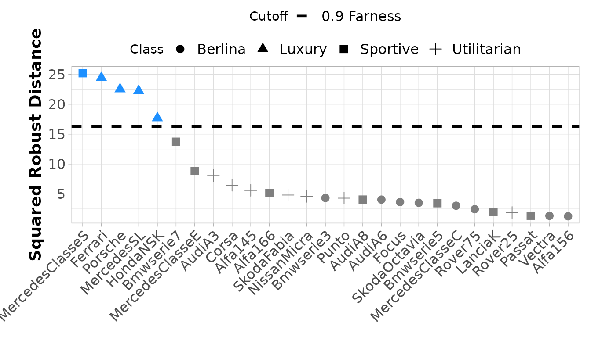
The int_Shapley function is used to compute the Shapley
value decomposition of the squared robust Interval-Mahalanobis
distances, using the IMCD estimates as the reference values for the mean
and covariance parameters. The int_Shapley function can
also be used without specifying the reference values, in which case it
will run the IMCD estimator internally to obtain the
necessary parameters for the Shapley value computation.
cars_shapley <- int_Shapley(cars_int, mean_c = cars_IMCD$mean_IMCD_c,
mean_r = cars_IMCD$mean_IMCD_r, cov = cars_IMCD$cov_IMCD)
cars_shapley2 <- int_Shapley(cars_int)Barplot of the Shapley value decomposition of the squared robust Interval-Mahalanobis distances. Only the six observations with the largest squared distances are shown, ordered from greatest to smallest squared distance represented by the black line, with the dotted line representing the farness cutoff.
barplot_int_Shapley(cars_shapley[c(cars_outliers$outliers_names,"Bmwserie7"),],
cutoff_value = cars_outliers$cutoff_value,
cutoff_label = "0.9 Farness Cutoff",
palette = scales::hue_pal()(4))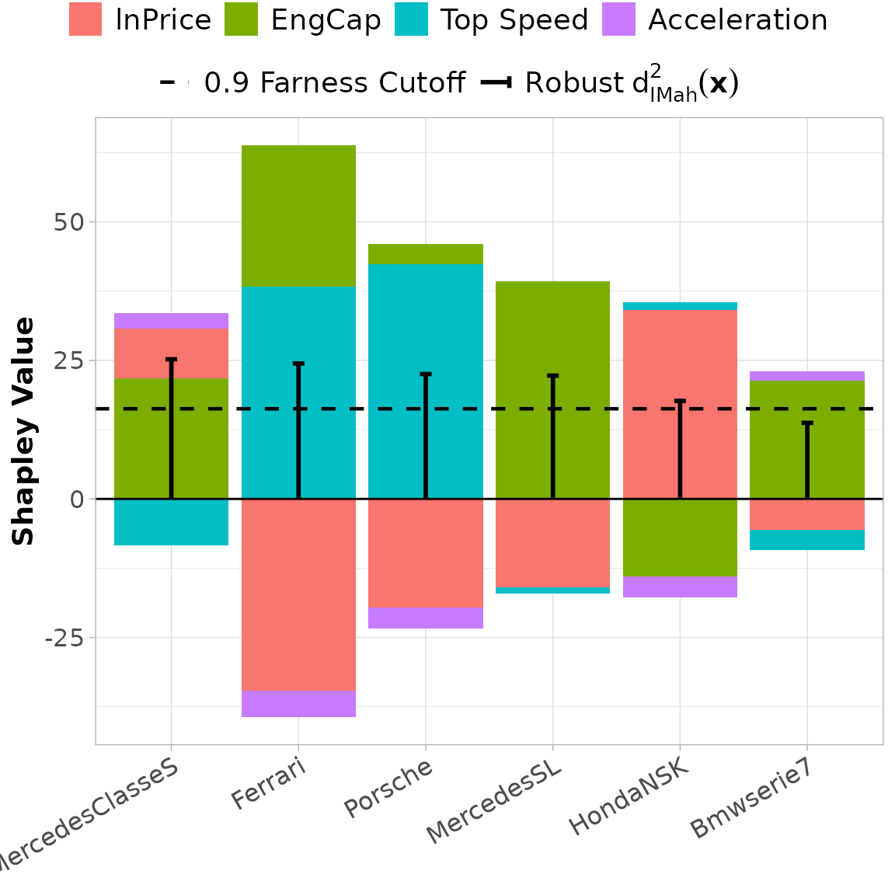
Beeswarm of the Shapley value decomposition of the squared robust Interval-Mahalanobis distances. The outlying observations are marked in blue and the shape represents the car model class.
beeswarm_int_Shapley(cars_shapley, cars_is_outliers, color_label = NULL,
shape_class = cars_microdata$class, shape_label = "Class",
palette = c("gray50","dodgerblue"), ggplotly = FALSE,
label_obs = c(cars_outliers$outliers_names), rotate_x = FALSE)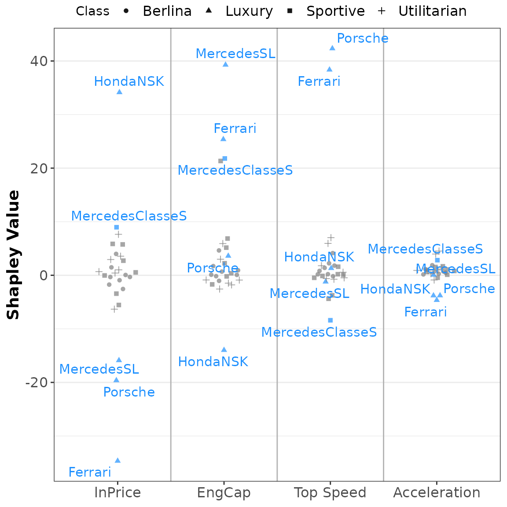
Tile plot of the Shapley value decomposition of the squared robust Interval-Mahalanobis distances. The observations are ordered from largest to smallest squared distance.
tileplot_int_Shapley(cars_shapley, abbrev.var = 15, sort.obs = TRUE)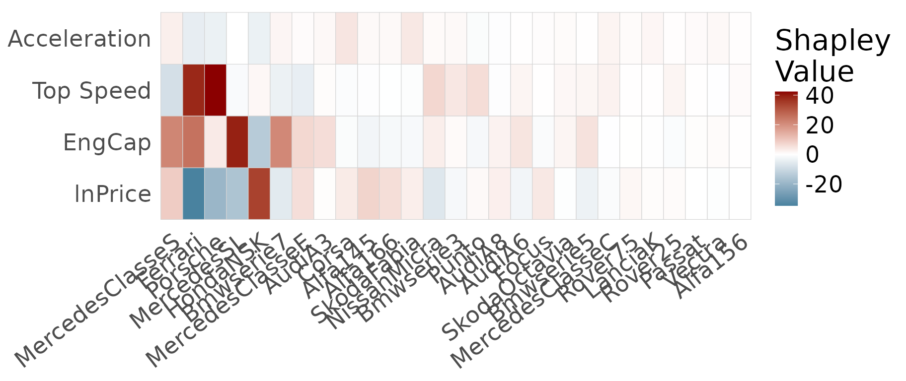
Radar plot of the Shapley value decomposition of the squared robust Interval-Mahalanobis distances. The outlying observations are marked in blue.
outliers_colors <- rep('gray50', cars_int@NObs)
names(outliers_colors) <- rownames(cars_int)
outliers_colors[cars_outliers$outliers_names] = 'dodgerblue'
radarplot_int_Shapley(cars_shapley,outliers_colors)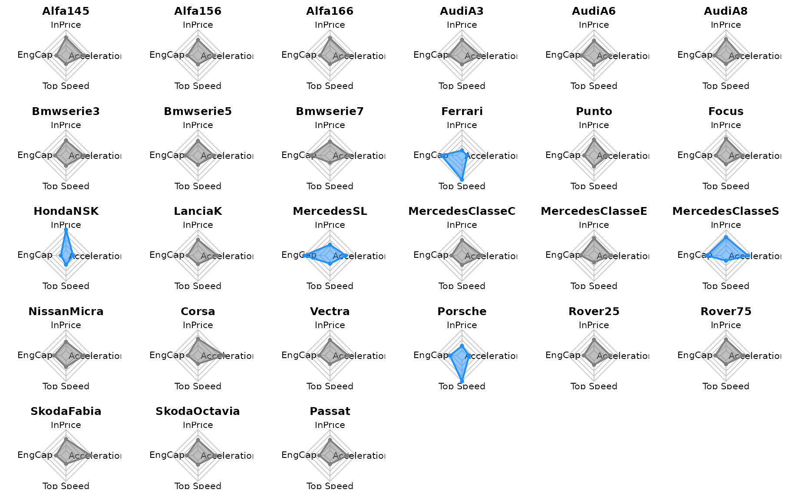
Tile plot of the Shapley interaction index for observation Ferrari.
cars_shapley_inter <- int_Shapley_interaction(cars_int, mean_c = cars_IMCD$mean_IMCD_c,
mean_r = cars_IMCD$mean_IMCD_r,
cov = cars_IMCD$cov_IMCD)
plot_int_Shapley_inter(cars_shapley_inter[["Ferrari"]], abbrev = 15, title = "Ferrari")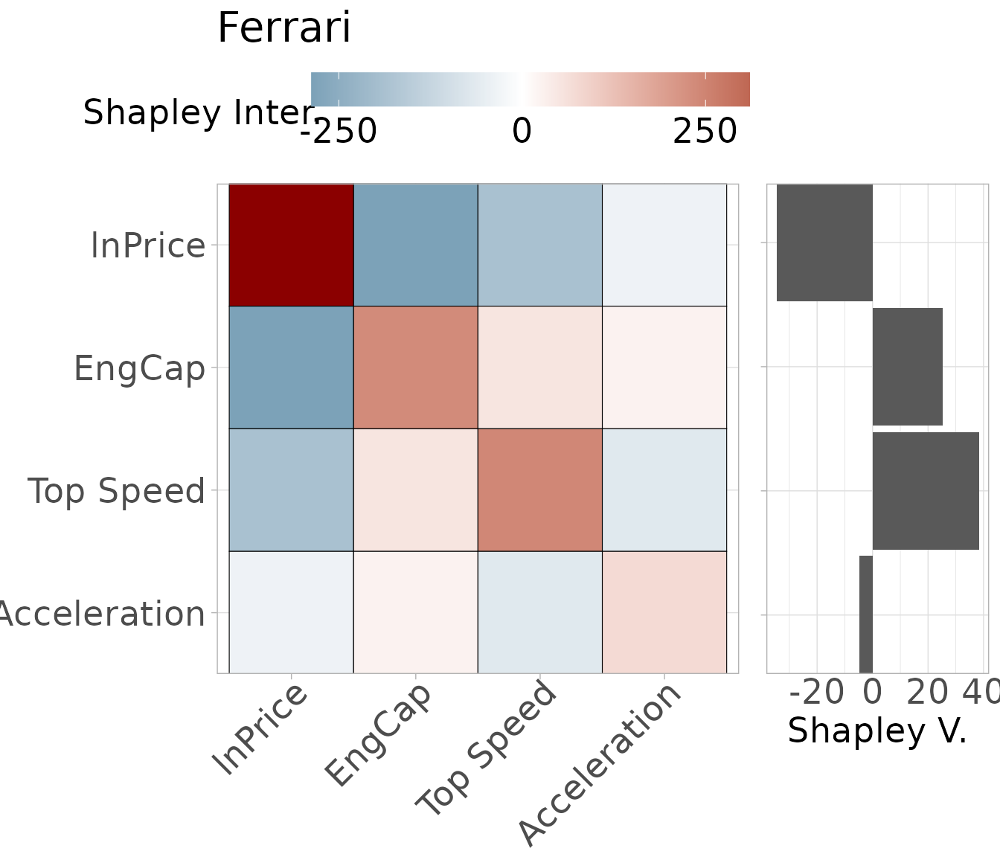
Barplot of the decomposition of the Shapley values by centers and ranges. Only the six observations with the largest squared distances are shown.
cars_shapley_decomp <- int_Shapley_decomp(cars_int, mean_c = cars_IMCD$mean_IMCD_c,
mean_r = cars_IMCD$mean_IMCD_r, cov = cars_IMCD$cov_IMCD)
barplot_int_Shapley_decomp(cars_shapley_decomp[c(cars_outliers$outliers_names,"Bmwserie7")],
rotate_x = FALSE, palette = scales::hue_pal()(4))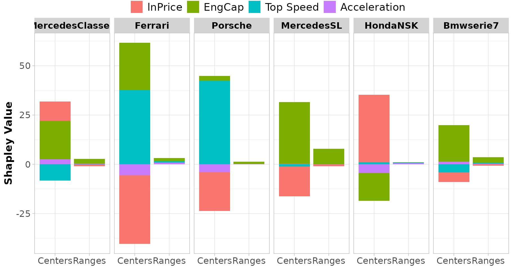
Spotify Tracks Dataset
This dataset contains interval data of Spotify tracks’ audio features (Pandya (2022)), including min-max values and trimmed intervals, as well as the microdata. The aggregation of the microdata was done by track genre, resulting in observations. It is composed of 11 audio features:
- duration
- danceability
- energy
- loudness
- speechiness
- acousticness
- instrumentalness
- liveness
- valence
- tempo
- popularity
Prior to aggregation, logarithmic transformations were applied to
loudness and tempo, duration_ms in
milliseconds was converted to duration in minutes, and
popularity was scaled to the range
.
The latent variables’ parameters are estimated from the microdata, using
Kernel Density Estimation (KDE) (package kde1d). Here, we
will use the data aggregated into trimmed intervals, taking as lower and
upper bounds the
and
quantiles, respectively.
data(spotify_tracks)
spotify_int <- spotify_tracks$intData_trimmedThe IMCD estimates and robust squared Interval-Mahalanobis distance
are computed using the IMCD function, while the
int_outliers function applies the outlier detection rule
identifying strong (cutoff_lvl=0.95) and mild outliers
(cutoff_lvl=0.9).
spotify_IMCD <- IMCD(spotify_int, m=round(0.75*nrow(spotify_int)),
cutoff="farness", cutoff_lvl = 0.95)
# Strong outliers
spotify_outliers <- int_outliers(spotify_IMCD$robust_dist,cutoff="farness", cutoff_lvl = 0.95)
spotify_outliers$outliers_names
#> [1] "classical" "comedy" "grindcore" "sleep"
# Mild outliers
spotify_outliers_2 <- int_outliers(spotify_IMCD$robust_dist,cutoff="farness", cutoff_lvl = 0.9)
spotify_outliers_2$outliers_names[!spotify_outliers_2$outliers_names%in%spotify_outliers$outliers_names]
#> [1] "ambient" "chicago-house" "death-metal" "iranian"Plot of the robust squared Interval-Mahalanobis distances for the Spotify dataset. The horizontal lines correspond to the and farness cutoff values, and the mild and strong outliers are marked in green and blue, respectively.
spotify_is_outliers <- as.character(spotify_outliers$is_outlier)
spotify_is_outliers[!spotify_outliers_2$is_outlier] <- "Regular"
spotify_is_outliers[spotify_outliers_2$is_outlier] <- "Mild Outlier"
spotify_is_outliers[spotify_outliers$is_outlier] <- "Extreme Outlier"
palette_outliers <- c(
"Regular" = "gray50",
"Mild Outlier" = 'forestgreen', #"darkorange",
"Extreme Outlier"= 'dodgerblue' #"red"
)
plot_interval_dist(
spotify_IMCD$robust_dist,
c(spotify_outliers$cutoff_value,spotify_outliers_2$cutoff_value),
c("0.95 Farness", "0.90 Farness"),
sort.obs = FALSE,
color_class = spotify_is_outliers,
color_label = "Outlier Status",
palette = palette_outliers,
label_obs = spotify_outliers_2$outliers_names)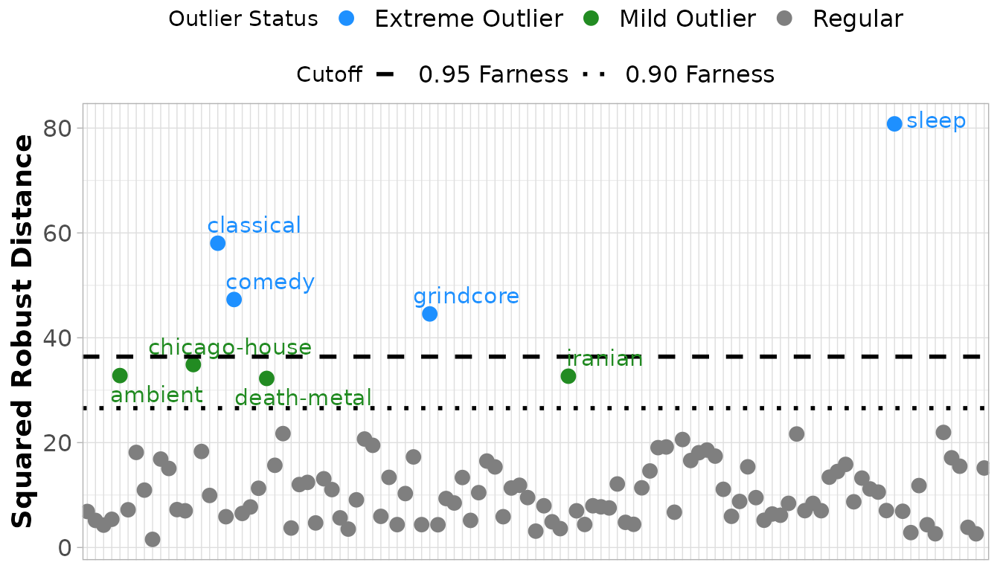
Barplot of the Shapley value decomposition of the squared robust Interval-Mahalanobis distances for the observations with the largest squared distances, ordered from greatest to smallest squared distance represented by the black line, with the dotted lines representing the and farness cutoff values.
spotify_Shapley <- int_Shapley(spotify_int, mean_c = spotify_IMCD$mean_IMCD_c,
mean_r = spotify_IMCD$mean_IMCD_r, cov = spotify_IMCD$cov_IMCD)
high_dist_12 <- names(spotify_IMCD$robust_dist[order(spotify_IMCD$robust_dist, decreasing = TRUE)[1:12]])
barplot_int_Shapley(spotify_Shapley[high_dist_12,],
cutoff_value = c(spotify_outliers$cutoff_value, spotify_outliers_2$cutoff_value),
cutoff_label = c("0.95 Farness Cutoff", "0.90 Farness Cutoff"),
sort.obs = TRUE, abbrev.obs = 20)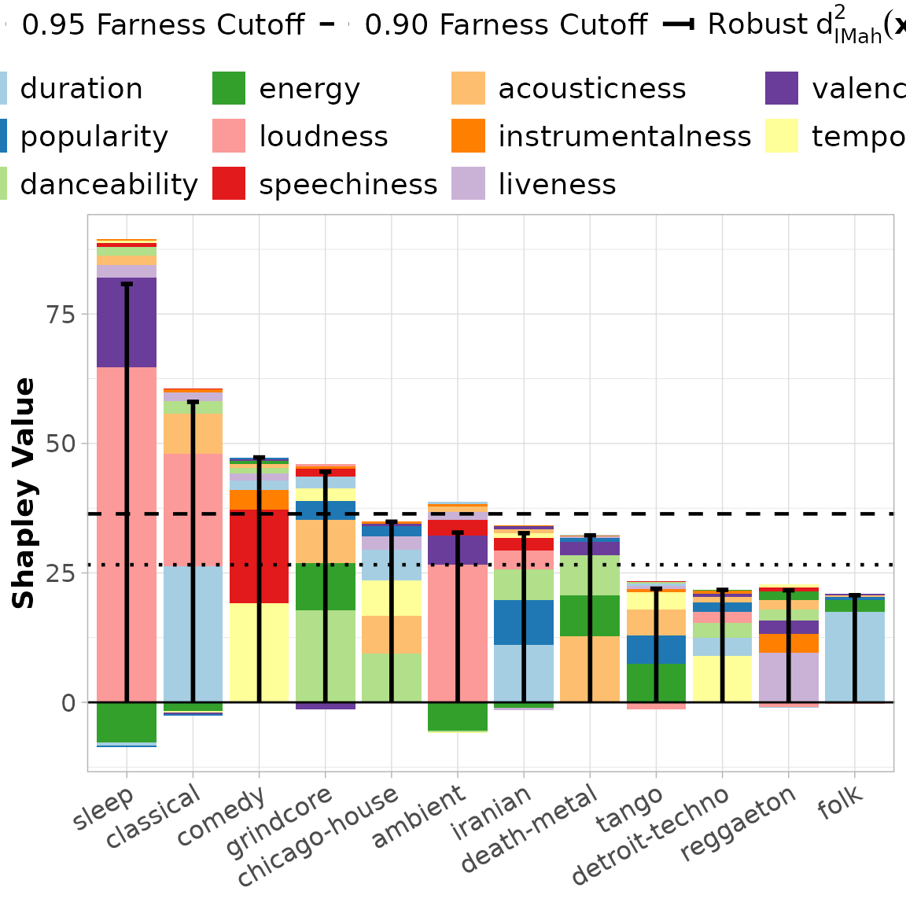
Beeswarm plot of the Shapley value decomposition of the squared robust Interval-Mahalanobis distances for the Spotify dataset. The extreme outliers are marked in blue and the mild ones in green.
beeswarm_int_Shapley(spotify_Shapley, spotify_is_outliers, "Outlier Status",
palette = palette_outliers, ggplotly = FALSE,
label_obs = c("sleep","classical"))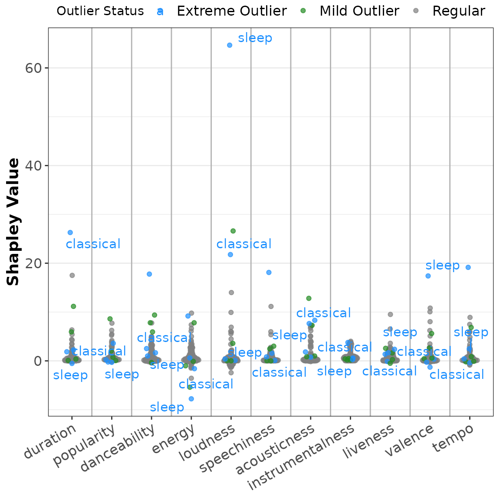
Tile plot of the Shapley value decomposition of the squared robust Interval-Mahalanobis distances for the observations with largest squared distances. The observations are ordered from largest to smallest squared distance.
tileplot_int_Shapley(spotify_Shapley[high_dist_12,], sort.obs = TRUE, abbrev.var = 15)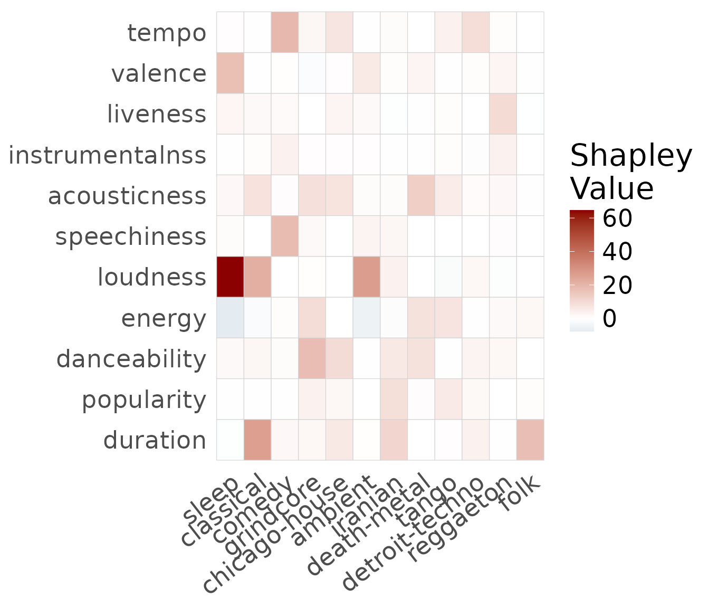
Tile plot of the Shapley interaction index for observation grindcore.
spotify_shapley_inter <- int_Shapley_interaction(spotify_int, mean_c = spotify_IMCD$mean_IMCD_c,
mean_r = spotify_IMCD$mean_IMCD_r,
cov = spotify_IMCD$cov_IMCD)
plot_int_Shapley_inter(spotify_shapley_inter[["grindcore"]], abbrev = 20, title = "grindcore")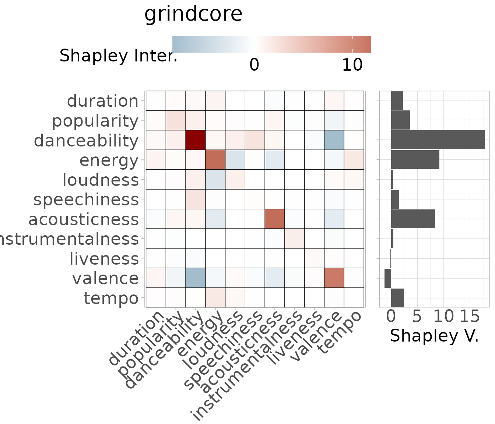
Barplot of the decomposition of the Shapley values by centers, ranges, and cross centers-ranges. The four extreme outliers and the four mild outliers are shown, ordered from greatest to smallest squared Interval-Mahalanobis distance.
spotify_shapley_decomp <- int_Shapley_decomp(spotify_int, mean_c = spotify_IMCD$mean_IMCD_c,
mean_r = spotify_IMCD$mean_IMCD_r,
cov = spotify_IMCD$cov_IMCD)
barplot_int_Shapley_decomp(spotify_shapley_decomp[spotify_outliers_2$outliers_names])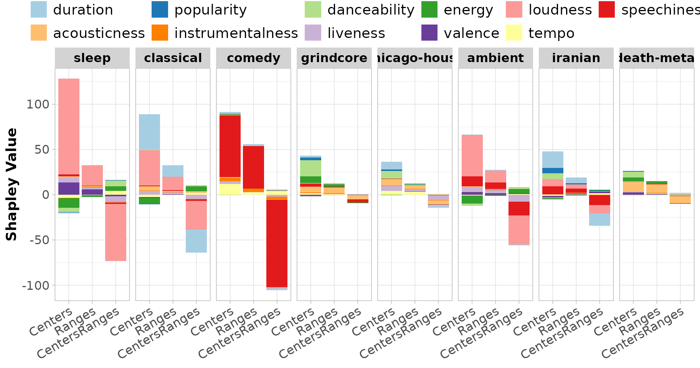